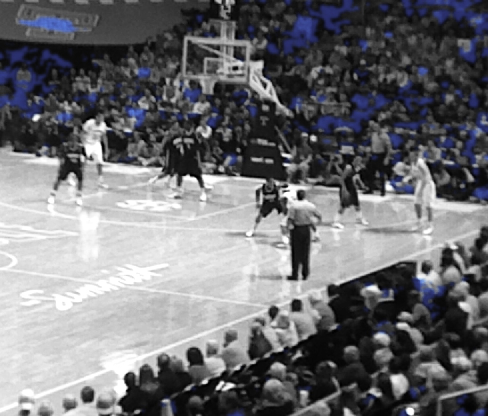
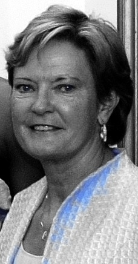

PAT SUMMITT
TENNESSEE · ENTRENADORA
14/12/2008 · AARONISNOTCOOL · CC BY 2.0
0
TROFEOS: RECREACIÓN

THOMPSON-BOLING ARENA · LA CASA DE LAS LADY VOLS · TN 66 · CC0
AULA Y BANQUILLO: RECREACIÓN
BANQUILLO

24/06/2008 · EJÉRCITO DE EE. UU.
PAT SUMMITT · 2008
C. M. O'CONNELL · EJÉRCITO DE EE. UU. · DOMINIO PÚBLICO
TERMINARON SU ETAPA
SE GRADUARON
0 %
BIRRETES: RECREACIÓN
FUERA
DENTRO
FOTOS: AARONISNOTCOOL (CC BY 2.0), TN 66 (CC0), CHRISTINA M. O'CONNELL /
EJÉRCITO DE EE. UU. (DOMINIO PÚBLICO), VÍA WIKIMEDIA COMMONS
AULA, TROFEOS Y BANQUILLO: RECREACIÓN